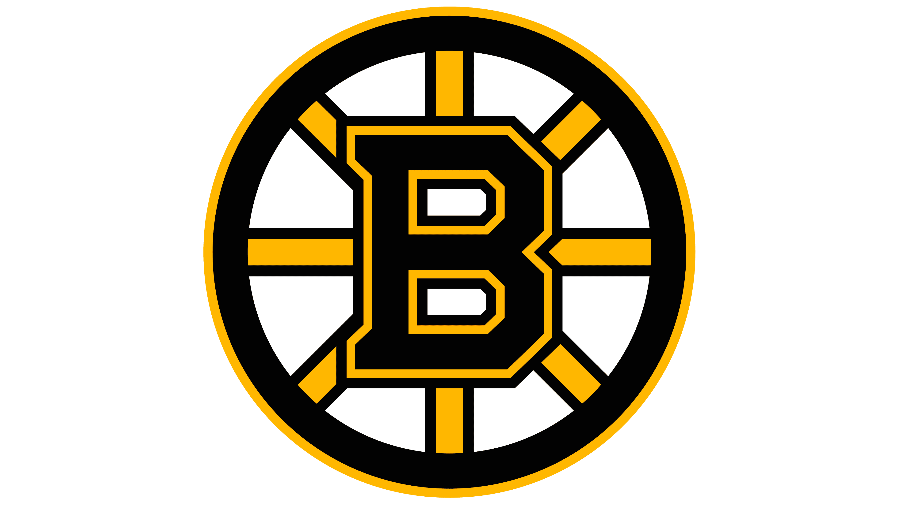

𝔹oston 𝔹ruins 2024-25 October Schedule
SEASON PREVIEW
| Date |
Opponent |
Time |
Venue |
| October 8, 2024 |
Flordia Panthers |
7:00 PM |
Amerant Bank Arena |
| October 10, 2024 |
Montreal Canadiens |
7:00 PM |
TD Garden |
| October 12, 2024 |
Los Angeles Kings |
1:00 PM |
TD Garden |
| October 14, 2024 |
Flordia Panthers |
1:00 PM |
TD Garden |
| October 16, 2024 |
Colorado Avalanche |
9:30 PM |
Ball Arena |
| October 19, 2024 |
Utah Hockey Team |
9:00 PM |
Delta Center |
| October 22, 2024 |
Nashville Predators |
8:45 PM |
Bridgestone Arena |
| October 24, 2024 |
Dallas Stars |
7:00 PM |
TD Garden |
| October 26, 2024 |
Toronto Maple Leafs |
7:00 PM |
TD Garden |
| October 29, 2024 |
Philadelphia Flyers |
7:00 PM |
TD Garden |
| October 31, 2024 |
Carolina Hurricanes |
7:00 PM |
PNC Arena |
The Boston Bruins Schedule for October is very challenging.
Eight out of eleven teams they face in October were playoff contenders last season. They also play the Florida Panthers twice, which is the team who eliminated them in the playoffs two years in a row.
With the addition of Elias Lindholm and Nikita Zadorov (helping their center issue and creating a more lockdown defence) they will still have a chance to lead their division.
If Pastrnak their number one player can heat up once again the Bruins might be able to make another run at the Stanley Cup. Another issue the Bruins are having though is signing their star goaltender Jermey Swayman.
Swayman is asking for 10 million dollars a year, which is a price the team can not afford to pay right now. So with only less than a month away the Bruins are going to have to figure out a way to win games with this tough start to the season.